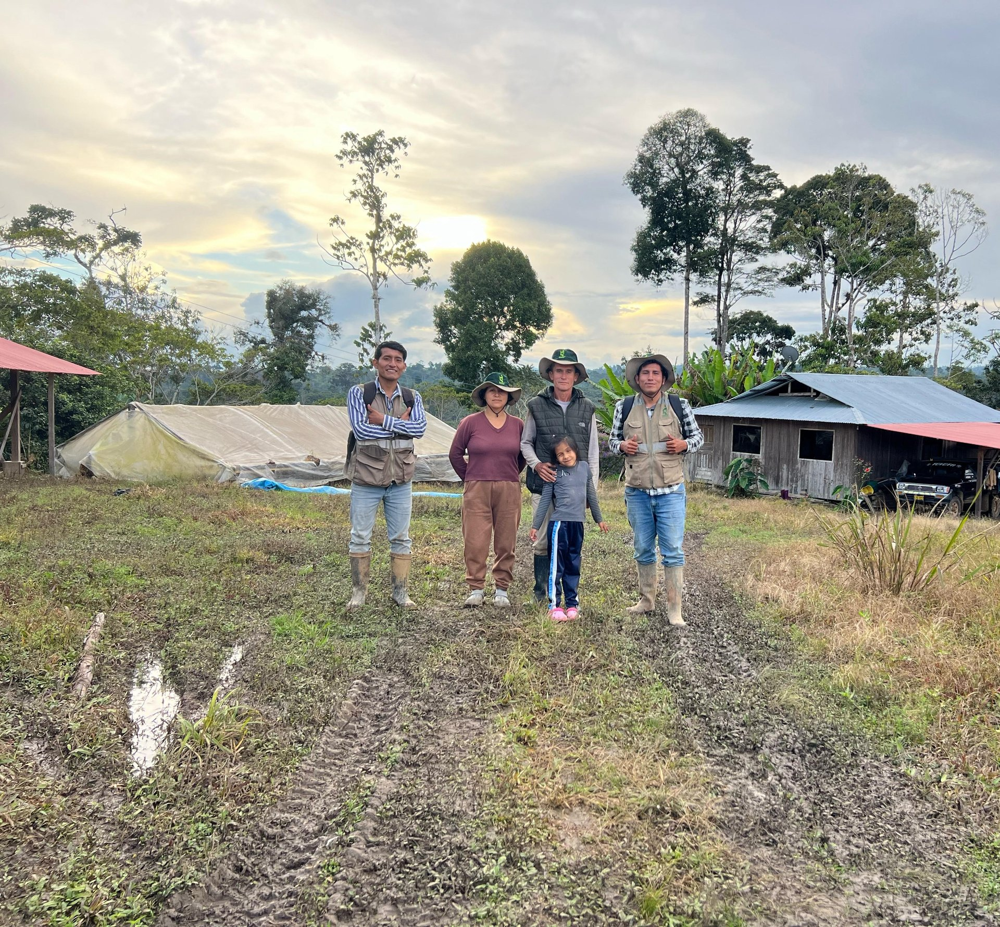

2026
Metodología Innovadora para la Incorporación Estratégica de Nuevos Socios
Uso de tecnología satelital y mapas avanzados para identificar e incorporar nuevos socios de manera ordenada y sostenible.
Ver más